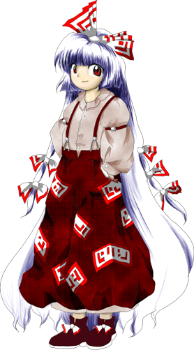

Mokou é frequentemente vista como:
Isolada e solitária – prefere viver afastada da sociedade, escondida na Floresta dos Bambus.
Invocada e rude – possui um exterior áspero e fala de forma direta, mas tem um bom coração.
Rancorosa e competitiva – sua imortalidade é alimentada pelo ódio e pela rivalidade eterna com Kaguya.
Ela transmite a sensação de uma guerreira cansada do mundo que encontrou na briga eterna sua única razão de existir.
🧠 Mente cansada e focada
Mokou lida com o fardo de viver por séculos:
Possui uma vasta experiência de sobrevivência
É pragmática e não liga para frescuras ou etiquetas
Entende a dor do isolamento como ninguém
Apesar do pavio curto, ela protege humanos perdidos na floresta de bom grado.
🎭 Comportamento recluso (Guia da Floresta)
Ela demonstra traços típicos de quem evita o vilarejo humano:
Passa a maior parte do tempo vagando pela Floresta dos Bambus
Veste-se de forma simples, parecendo um rapaz moleque
Fuma e age de forma desleixada para afastar os outros
Seu desapego pelo mundo social é o resultado de séculos de rejeição.
🌿 Vida na Floresta dos Bambus
Mokou vive em uma cabana simples isolada na mata:
Garante que os monstros não ataquem os humanos locais
Trabalha secretamente como guia para quem se perde na floresta
Vigia os arredores de Eientei apenas para caçar briga com Kaguya
Ela prefere a simplicidade de sua cabana do que qualquer luxo da nobreza que um dia pertenceu.
🤝 Relação com os outros
Mokou interage de forma distante, mas intensa com Gensokyo:
Mantém uma rotina de matar e ser morta por Kaguya Houraisan diariamente
É muito amiga de Keine Kamishirasawa, que a aceita como ela é
Ajuda os humanos do vilarejo, mesmo que de longe e sem pedir obrigado
No fundo, ela valoriza qualquer um que consiga fazê-la esquecer o tédio da imortalidade.
Guia da Floresta dos Bambus
Mokou usa seu conhecimento do território perigoso para escoltar humanos em segurança e escoltar mercadorias.
Guardiã Oculta
Embora finja não se importar, ela extermina youkais agressivos que tentam invadir o vilarejo humano por aquela rota.
Manipulação do fogo da Fênix
O principal poder de combate de Mokou é gerar chamas destrutivas:
Pode criar explosões e rajadas de fogo massivas
Suas chamas ganham a forma de asas e fênix de fogo
O fogo que ela evoca queima até mesmo a alma de seus alvos
Suas técnicas de combate são brutais e focadas em pura ofensiva.
Imortalidade Absoluta (Elixir de Hourai)
Por ter bebido o elixir, ela é completamente incapaz de morrer. Seu corpo se regenera de cinzas ou feridas fatais instantaneamente.
Resistência Total à Dor
Como já morreu e ressuscitou milhares de vezes, ela desenvolveu uma tolerância assustadora à dor física em batalha.
Combate Corpo a Corpo
Ao contrário de muitos seres mágicos, Mokou chuta, esmurra e luta de forma física combinando suas artes marciais com suas explosões térmicas.
Mesmo sem usar poderes refinados ou divinos, sua imortalidade implacável e suas chamas eternas fazem dela uma das forças mais temidas e imparáveis de Gensokyo.

Espécie:Humana
Título:Figura da Pessoa de Hourai (Hourai no Hito)